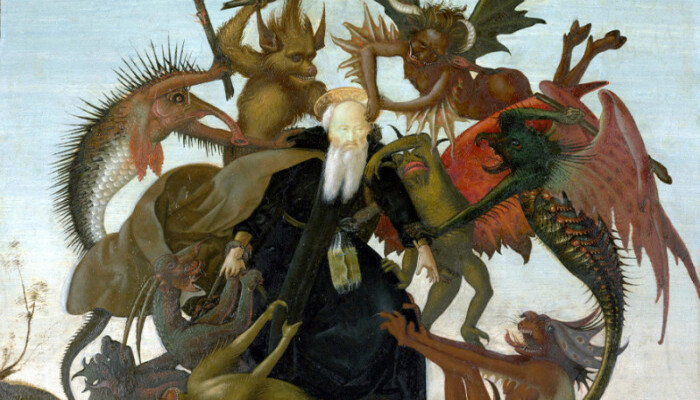
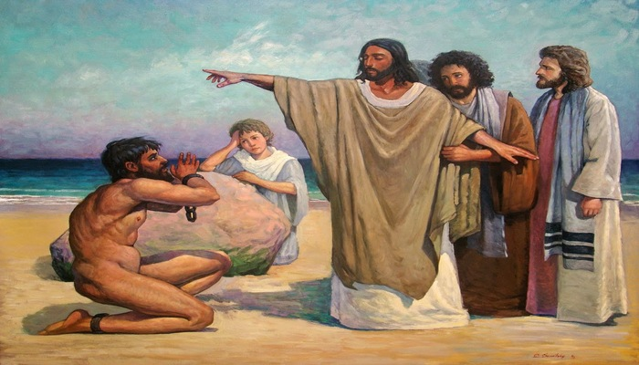

An Unclean Spirit Returns
When the unclean spirit is gone out of a man, he walketh through dry places, seeking rest, and findeth none.
Then he saith, I will return into my house from whence I came out; and when he is come, he findeth it empty, swept, and garnished.
Then goeth he, and taketh with himself seven other spirits more wicked than himself, and they enter in and dwell there: and the last state of that man is worse than the first. Even so shall it be also unto this wicked generation.
Matthew 12:43-45
- 
- 